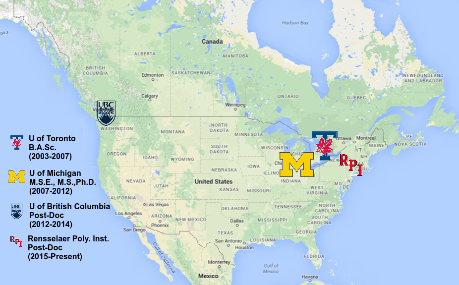
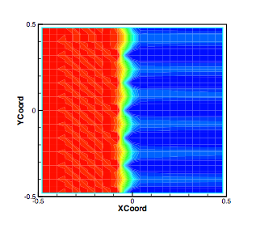
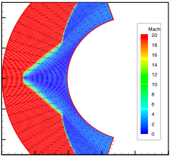
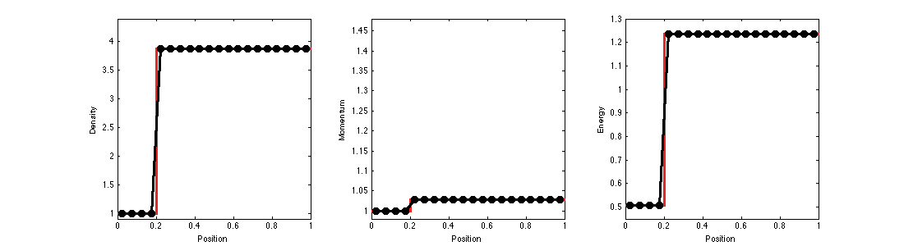
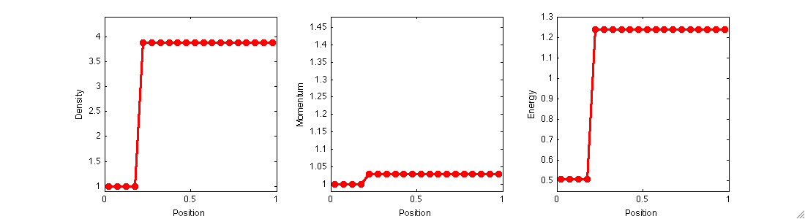
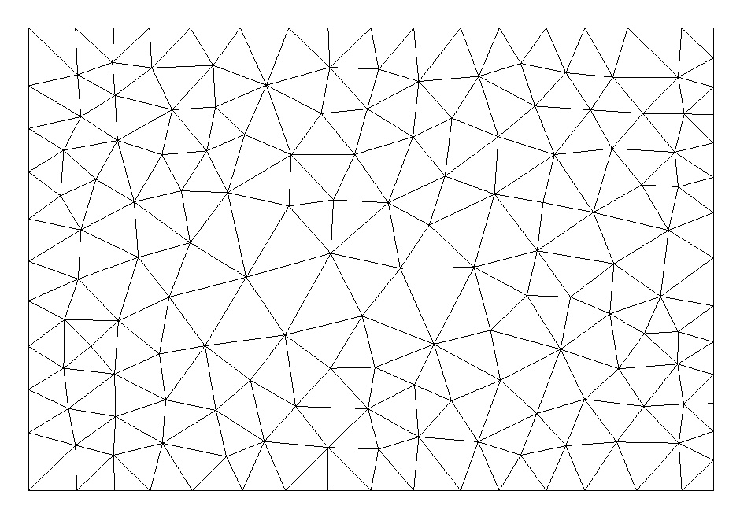

Who is Daniel Zaide?
Daniel W. Zaide
Rensselaer Polytechnic Institute
January 15th, 2015
Link to PDF Version
A little bit about me...
Research - Shockwaves
In the simulation of shockwaves with a standard shock-capturing approach, anomalous behavior can often be seen such as
- Oscillations behind slowly-moving shocks,
- Start-up errors,
- Wall heating,
- Unstable equilibria,
- Slow convergence to steady state,
- First-order errors in ``high-order'' schemes,
- "Carbuncles"
Research - Shockwaves
 On the left, a planar shockwave is simulated and develops an instability, on the right, a bow shock is simulated and develops a heat spike. (Kitamura and Nishikawa)
Research - Shockwaves
If our simulations develop these problems, and our solvers treat these numerical errors as physical waves, we lose faith in the validity of our underlying simulation.
This is particularly problematic in simulations where we are not certain of the expected physical behavior.
Research - Shockwaves
Consider the simplest case for the 1D Euler Equations, a single stationary shock computed with a first-order method in space and time, initialized with the exact solution:

Research - Shockwaves
Consider the second simplest case for the 1D Euler Equations, a single slowly moving shock computed with a first-order method in space and time:
There is a large wave shed as the shock moves through the uniform mesh.
Research - Shockwaves
In my research, I introduced a new method (red) which reduced the error significantly compared with traditional methods (black) while maintaining the sharpness of the shockwave.
Research - Shockwaves
Unlike other methods which alleviate the symptoms of the problem, my research focused on understanding the root cause of these errors, which was determined to be the nonlinearity of the shockwave jump conditions.
While an improved method was developed in one dimension, its extension to two dimensions was problematic and is a current area of research.
Research - Meshing
Problem: take a pre-existing mesh and insert a series of prescribed internal
boundaries into its topology.
Goal: obtain internal boundaries in a general,
pre-existing mesh with minimal mesh modification.
Motivation: remeshing to match the surfaces of a newly
deposited layers of material in the simulation of the
semiconductor device manufacturing process.
Research - Meshing
Our approach is to insert and remove points with local
operations to recover the surface and post process to recover
quality.
This allows for insertion of arbitrary geometries, with minimal
requirements on geometric smoothness and on topology or
quality of the existing mesh.
The novel aspect of our approach is the surface sampling to determine point spacing to minimize the effect on the existing mesh.
This also allows for fewer requirements in the existing mesh when compared with other methods.
Research - Meshing

Research - Meshing

Research - Meshing


Research - Meshing


Active Projects
-
Unstructured Curved Meshing for High-Order Finite Element Simulations
- With Mark Shephard, Scientific Computation Research Center (RPI) Introducing Predictive Multiscale Modeling Into Dynamic, Ecological, Integrated Building Systems For Validation And Uncertainty Analysis
- With Assad Oberai, Scientific Computation Research Center and Anna Dyson, Center for Architecture Science and Ecology (RPI) Inserting Explicit Boundaries into Anisotropic Meshes, Anisotropic Surface Meshing, and Optimal Point Insertion for Delaunay Mesh Refinement
- With Carl Ollivier-Gooch (UBC)